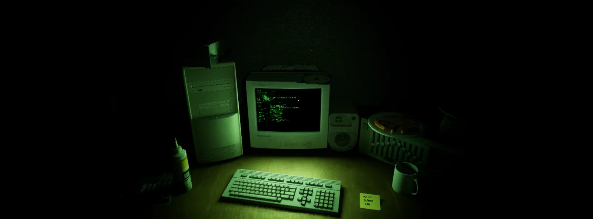

Sector Zero
A first-person horror game set in a single room. A text file is the physics engine. You play Brian, sent into a dead research site with no memory of arriving. The terminal, RealityTXT, keeps a record of every object in the room, and whatever the record says, reality obeys. Brian has a record too.
Register it or lose it
The room starts broken: a storm keeps taking whatever is loose. The goal is to register things so it cannot.
- StormThunder rolls. Loose objects drift off.
- ChooseEvery save costs budget. Pick what matters.
- RegisterType create. The object becomes a file.
- EditRewrite the file and the object follows.
Every save spends from a budget, so attention is the currency: you cannot register everything, you choose what matters. Session by session the room calms into an order you built yourself.
Look at an object, read its ID, type create: the object is now a text file.
The storm
On a timer, thunder rolls a strength, and every loose object rolls against it.
The losers drop their gravity and drift off. Seconds later the screen blinks black and they snap back, one of them changed. Stronger thunder brings the next one sooner.
One room, on purpose
The whole game happens in one room. That is the design, not a limit.
A big map spreads a solo budget so thin that every object becomes a generic interact prompt. One room lets each object get the time it needs, down to an ID and a note of lore from whoever handled it before you.
The chair
The office chair sets the bar: built until a chair was fun to play with.
Kick, slide, spin, bounce: tank controls on an office chair.
Forward is a kick in three beats: weak, strong, weak, pause. The chair slides, brakes harder right after a kick so it never feels like ice, and bounces off walls. You can work the whole room without standing up.
Say nothing
Sector Zero is a sandbox. It explains almost nothing and never waits for the one thing it wanted.
Every object has a three-character ID and a note from whoever handled it last.
Most problems have more than one solution, and a player who never finds the intended one has still played correctly. Nothing has to be what it looks like either: a floppy disk could be a teleporter, so the most ordinary object is worth a second look.
A real shell
RealityTXT is a working shell over a virtual filesystem, not a menu dressed as one.
Credentials come off a note in the room, and a bad path gets a real error.
It runs ls, cd, cat, create, edit, rm and mail, which doubles as the hint system. Your login is a line in a file, so editing it changes your password. Every mechanic is a text operation, so a new feature costs a command rather than a UI.
Friction, then less of it
Typing is slow, and early on that is the point.
Friction makes the room feel like a workplace, but a terminal turns tedious fast. So it is kept for the moments that need it, and later tools are planned to automate registering. Early friction is realism. Late friction would just be waste.
Brian is an object
Brian is heavy, out of shape and slow. That is not a movement setting, it is his worker record.
Weight, height, sex, age, password: save the file and Brian changes.
Weight drives walk speed, jump and gravity; height rescales him. Type a negative weight and gravity flips: he falls onto the ceiling and the controls invert with him. Past two and a half metres, the file kills him. It is the same rule as every object in the room, applied to the player.
The dark
The horror works because you never leave. You learn where everything sits, so a mug that moved is worse than a jump scare.
The plan puts something in the room with you: dark, never fully shown, throwing objects and corrupting files. Better tools and traps then let Brian push the creature back, from victim to master of the room. None of this is in the build yet.
Obscura Dynamics
Obscura Dynamics researches anomalies, and found in them a component that is not matter, sound or light: Anomium. Whatever touches it suffers pure chaos.
Sealed in a reinforced computer it became RealityTXT, the company's first weapon against chaos. When the remote site Sector Zero went silent, Obscura did not risk staff: it recruited four people in debt, Brian, Amy, Laura and Jason, and had them sign. The game opens with Brian alone, without memories. The creature is the threat. The corporation is the antagonist.
Where it stands
Built: the shell and its filesystem, login off a file, the register and edit loop with its budget, the worker record with inverted gravity, the storm cycle, the chair, a screwdriver that flies back to where you threw it from, and a lantern that lies about working.
Next: the creature, the traps, the tools that automate registering, the medical records. Sector Zero is a proof of concept on purpose. Prove one room can carry a game, then fill it.